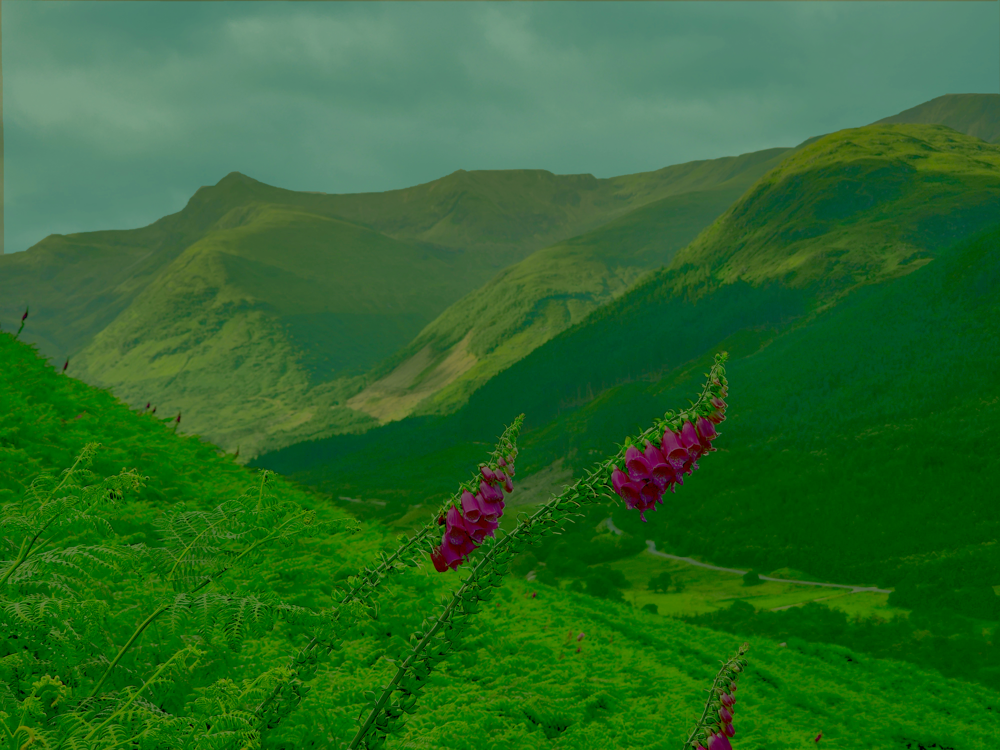
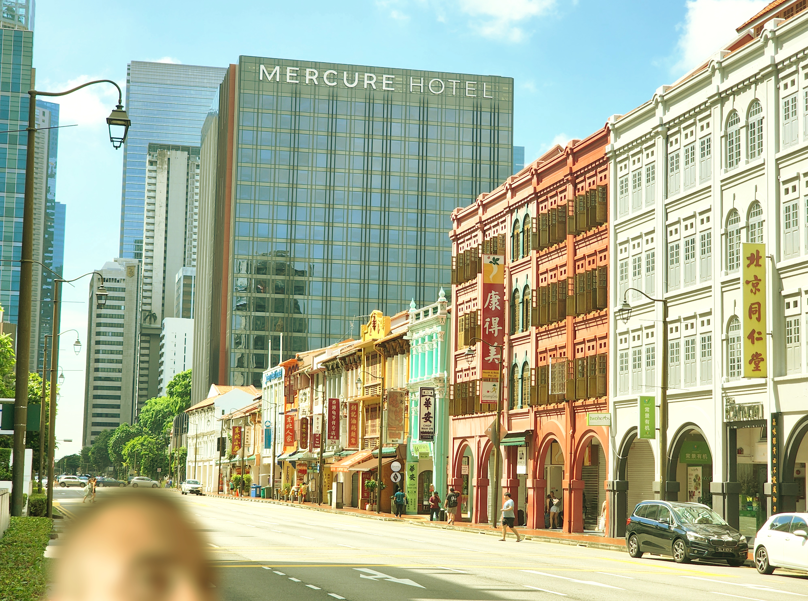
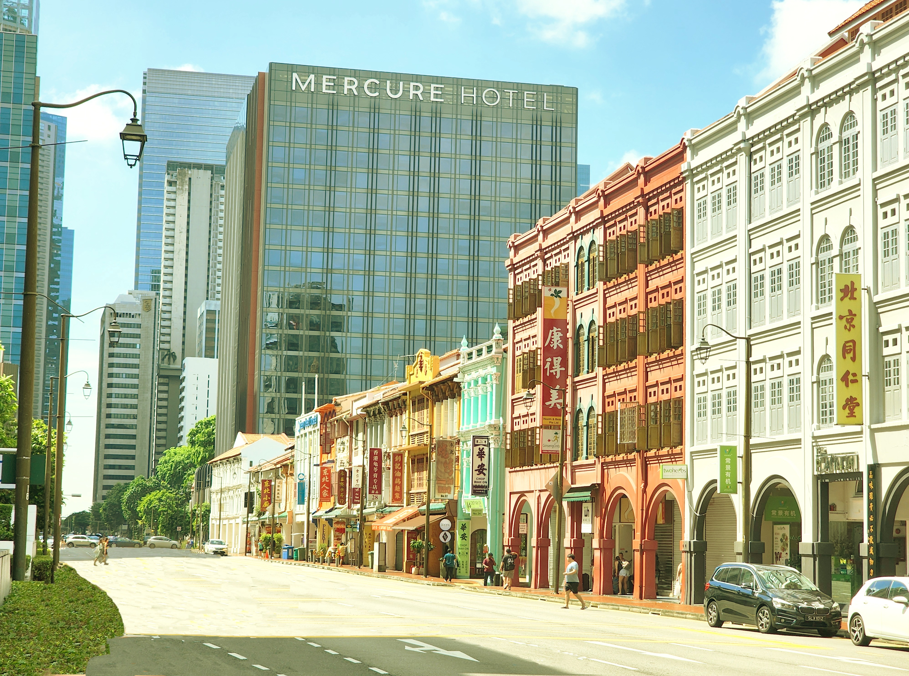
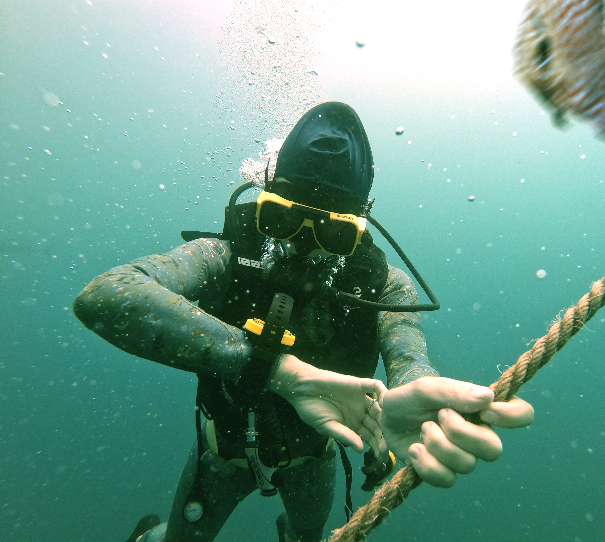
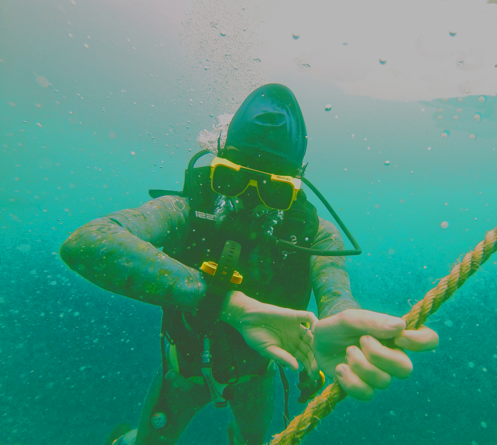

Här jämför jag originala bilderna med de redigerade versionerna.
Mina bildredigeringar


I bild ett har jag justerat ljusstyrka och kontrast för att göra skogen mer livfull, samt färglagt himlen blå för att ge bilden ett mer enhetligt och naturligt utseende.


I bild två har jag har mörkat ner byggnaderna något och tagit bort ett halvt huvud längst ner med Clone Tool för att bilden ska se ren ut.


I bild tre har jag justerat ljuset under vattnet och tagit bort en fisk som stack in från sidan, så bilden ser mer harmonisk ut.